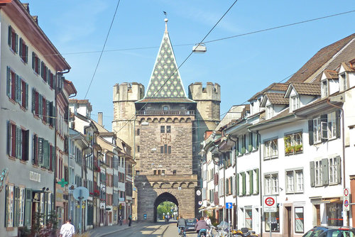
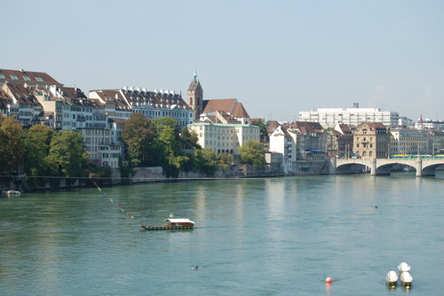
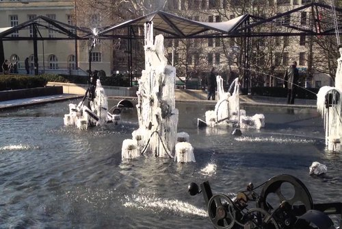
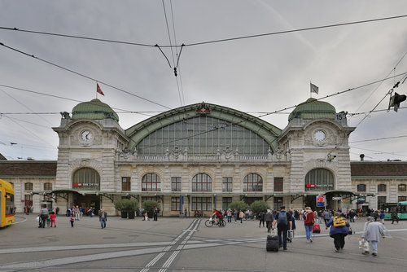
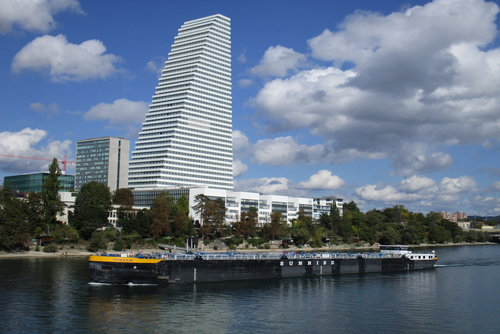
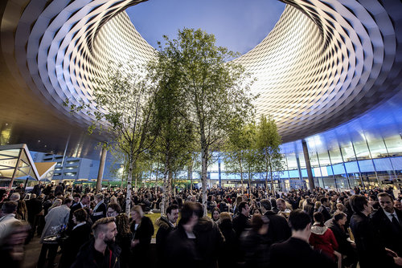

Basel City is one of the 26 cantons in Switzerland. It is located in the northern part of Switzerland and borders both France and Germany. Its current population is 198,249 inhabitants, of which 30.3% are foreigners. The river Rhine runs straight through the city separating the old town and ‘Gross Basel’.
- The chemistry and pharma industry plays a significant role here with the headquarters of Novartis and La Roche.
- Fasnacht, Baselworld and Art Basel are a few of the large events happening yearly in Basel.
- Basel is also known for its banking sector and being the worldwide seat of the Bank for International Settlements.

An old gate from when Basel was fortified.

The Rhine river with an old bardge.

The Tinguely fountainds frozen during winter.

The old trainstation.

One of a few 'skyscrapers' in Basel.

The worldwide renouned jewellery event in Basel.